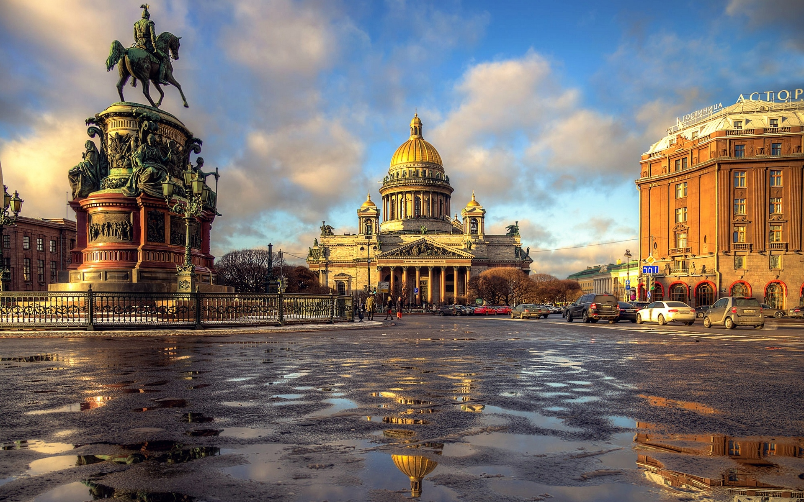
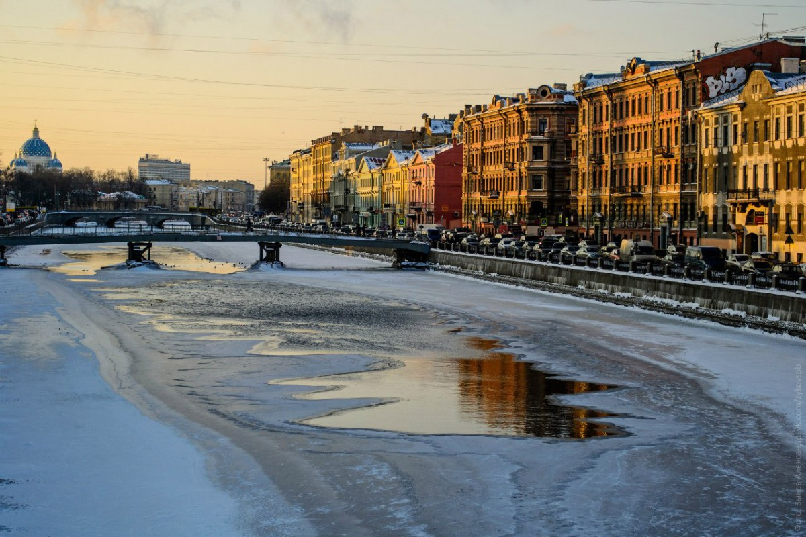
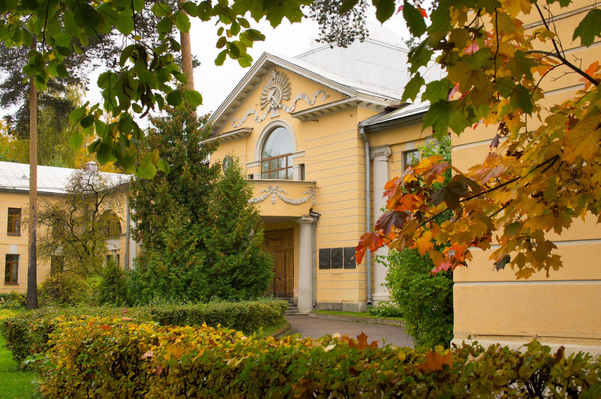

Conference Venue
St. Petersburg is among the most beautiful cities in the world. It is located on more than 100 islands, where the river Neva meets the Finish Bay. The city was founded 315 years ago by Peter the Great as the capital of the Russian Empire (till 1918). The city has 5.2 million inhabitants. Its historic centre constitutes a UNESCO World Heritage Site.


The weather in the end of October is mostly cloudy with usual temperatures between 2 and 10°C. Rain is very likely, so it would be better to bring umbrellas with you.
The Conference will be held in big Conference Hall of Ioffe Institute.
The Ioffe Institute building is located within 5 minutes by foot from the subway station “Politekhnicheskaya” (metro red line, No. 1).

Several shuttle busses and minivans between the airport (railway stations) and Ioffe Institute/”Orbita” hotel will be arranged during arrival and departure days with the schedule most conveniently matched to the flights (trains) of the participants.